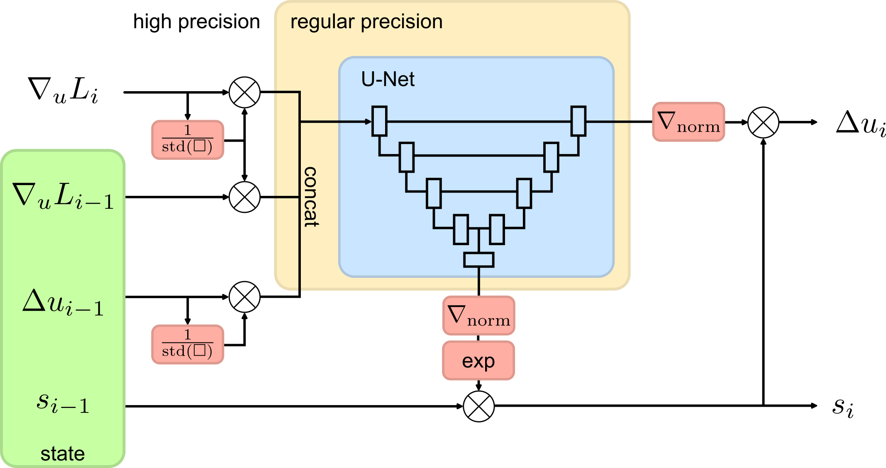
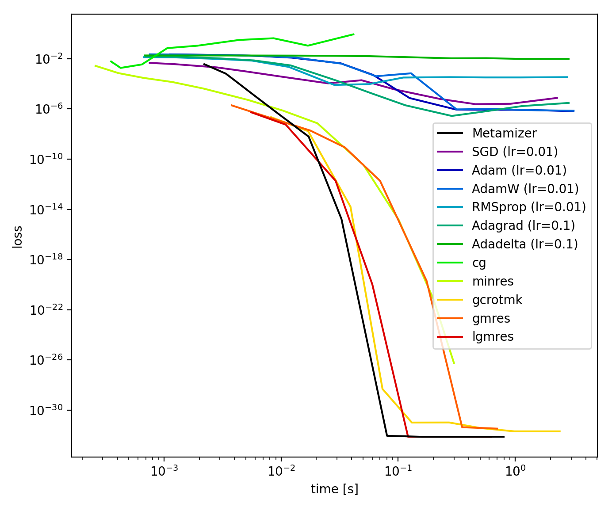
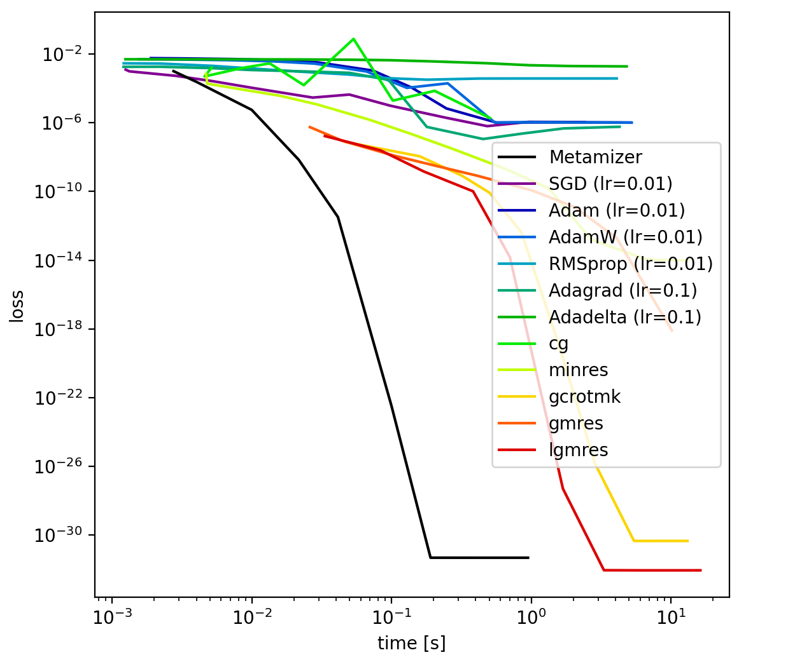

Metamizer is able to simulate various linear and non-linear physical systems. All of the shown simulations were performed in real-time by the same net (same architecture and same weights).
PDEs marked in red were not considered during training.
Abstract
Efficient physics simulations are essential for numerous applications, ranging from realistic cloth animations or smoke effects in video games, to analyzing pollutant dispersion in environmental sciences, to calculating vehicle drag coefficients in engineering applications. Unfortunately, analytical solutions to the underlying physical equations are rarely available, and numerical solutions require high computational resources. Latest developments in the field of physics-based Deep Learning have led to promising efficiency improvements but still suffer from limited generalization capabilities and low accuracy compared to numerical solvers.
In this work, we introduce Metamizer, a novel neural optimizer that iteratively solves a wide range of physical systems with high accuracy by minimizing a physics-based loss function. To this end, our approach leverages a scale-invariant architecture that enhances gradient descent updates to accelerate convergence. Since the neural network itself acts as an optimizer, training this neural optimizer falls into the category of meta-optimization approaches.
We demonstrate that Metamizer achieves unprecedented accuracy for deep learning based approaches - sometimes approaching machine precision - across multiple PDEs after training on the Laplace, advection-diffusion and incompressible Navier-Stokes equation as well as on cloth simulations. Remarkably, the model also generalizes to PDEs that were not covered during training such as the Poisson, wave and Burgers equation.
Our results suggest that Metamizer could have a profound impact on future numerical solvers, paving the way for fast and accurate neural physics simulations without the need for retraining.

The scale invariant neural optimization architecture allows to iteratively optimize solutions of PDEs up to high accuracy. More information is provided in our →preprint.
Linear PDEs
Laplace Equation
The Laplace equation is given by:
$$\Delta u = 0$$
Metamizer iteratively refines a solution $u_i$. To this end, it takes the gradients of a physics-based loss $\nabla_u L_i$ (here, $L=$ the mean squared residuals of the Laplace equation) as input and suggests an update step $\Delta u_i$ to compute $u_{i+1}=u_i+\Delta u_i$ (Attention: don't confuse this update step $\Delta u_i$ with the Laplace operator ;). To enable large steps at the beginning and fine adjustments at the end of the optimization, Metamizer utilizes an internal scaling factor $s_i$ (similar to a learning rate). The following step by step visualization demonstrates this optimization process:
... after about 50 iterations, Metamizer reaches the limits of machine precision, preventing further optimization.
Accuracy
We compared the performance of Metamizer with several other gradient based optimizers (SGD, Adam, AdamW, RMSprop, Adagrad, Adadelta) as well as iterative sparse linear system solvers from scipy (cg, minres, gcrotmk, gmres, lgmres). All qualitative results shown on this website were performed on a 100x100 grid. To investigate the scaling behavior for larger grids, we also performed a test on a 400x400 grid.
100x100 grid

Metamizer reaches a mean squared residual loss of $6.7\times 10^{-33}$ after only $0.08 s$ on a 100x100 grid.
This is significantly faster than other gradient based methods like SGD, Adam, etc and even slightly outperforms sparse linear system solvers. In contrast to linear system solvers however, Metamizer can be applied to non-linear systems as well (see examples below). To the best of our knowledge, there exist no other deep learning based approaches that achieve this level of accuracy.
400x400 grid

To investigate the scaling behavior on larger grid sizes, we retrained a Metamizer to solve the Laplace equation on a 400x400 grid. Here, the performance improvement becomes even more distinct as Metamizer can be easily parallelized on GPUs.
Poisson Equation
The Poisson equation is the non-homogeneous form of the Laplace equation:
$$\Delta u = f$$
Although Metamizer was not trained on the Poisson equation, it is able to generalize. In the following example, we search for the electro-static potential of 2 oppositely charged particles within a box:
Advection-Diffusion Equation
The advection-diffusion equation is given by:
$$
\partial_t u = D \Delta u - \nabla \cdot (\vec{v} \, u) + R
$$
Here, $D$ is the diffusivity parameter, $\vec{v}$ the velocity field for the advection term and $R$ corresponds to the source / sink term.
The following videos show simulations of a small heat-source in a spinning velocity field for different diffusivity parameters synchronized with the simulation speed of Metamizer:
$D=0.1$
$D=0.5$
$D=2$
$D=10$
Wave Equation
The wave equation is given by:
$$
\partial_t^2 u = c^2 \partial_x^2 u
$$
Here, $c$ corresponds to the wave propagation speed. The wave equation wasn't considered during training. The following videos show simulations for different wave propagation speeds synchronized with the simulation speed of Metamizer:
$c=1$
$c=2$
$c=10$
$c=1$
Non-Linear PDEs
Navier-Stokes Equation
The Navier-Stokes equation is an important non-linear PDE to describe the velocity field $\vec{v}$ and pressure field $p$ of a fluid:
$$
\rho\left( \partial_t \vec{v} + \left(\vec{v} \cdot \nabla \right) \vec{v} \right) = \mu \Delta \vec{v} - \nabla p + \vec{f}_\textrm{ext}
$$
Here, $\mu$ corresponds to the fluids viscosity and $\rho$ to its density. Below, some examples with different viscosities and densities are presented:
$\mu=0.1$, $\rho=4$
$\mu=1$, $\rho=10$
$\mu=10$, $\rho=10$
$\mu=5$, $\rho=1$
Burgers Equation
The Burgers equation is given by:
$$
\partial_t \vec{v} + \left(\vec{v} \cdot \nabla \right) \vec{v} = \mu \Delta \vec{v}
$$
Here, $\mu$ is a viscosity parameter. The Burgers equation exhibits interesting shock patterns and wasn't considered during training. Below, we present some examples with $\mu=0.3$ and $\mu=1$:
$\mu=0.3$
$\mu=0.3$
$\mu=1$
$\mu=1$
Cloth Simulation
For cloth simulations, we follow previous works by Santesteban et al. and Stotko et al. and utilize the following loss:
$$
L = E_\textrm{int}(\vec{x}^t) - \Delta t^2 \langle \vec{F}_{\mathrm{ext}}, \vec{a}^t \rangle + \frac{1}{2} (\Delta t)^2 \langle \vec{a}^t, M \vec{a}^t \rangle
$$
Here, $\vec{F}_{\mathrm{ext}}$ corresponds to external forces (such as gravity or wind), $M$ is the mass matrix and $E_\textrm{int}$ are the internal energies of the cloth specified as follows:
$$
E_\textrm{int} = c_\textrm{stiff} \frac{1}{2} \sum_{\vec{e} \in \textrm{edges}}\left(||\vec{e}||-1\right)^2 + c_\textrm{shear} \frac{1}{2} \sum_{\psi \in \textrm{right angles}}(\psi-90^\circ)^2 + c_\textrm{bend}\frac{1}{2} \sum_{\theta \in \textrm{straight angles}}(\theta-180^\circ)^2
$$
where $c_\textrm{stiff},c_\textrm{shear},c_\textrm{bend}$ are parameters that describe stiffness, shearing and bending properties of the cloth. Below, we show some simulation results for different cloth parameters:
For more information, please have a look at our preprint.
Code as well as a pretrained model will be made available upon acceptance.
BibTeX
@article{wandel2025metamizer,
author = {Wandel, Nils and Schulz, Stefan and Klein, Reinhard},
title = {Metamizer: a Versatile Neural Optimizer for Fast and Accurate Physics Simulations},
journal = {Under review at ICLR},
year = {2025},
}